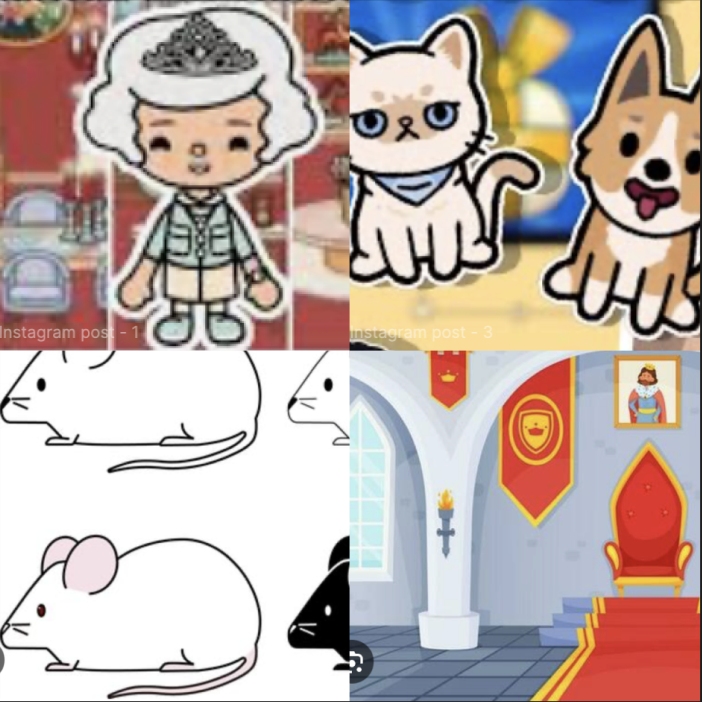
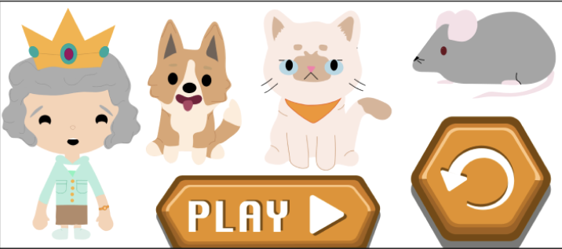

Inspiration:
"Dronningens Musejagt" – Her skaber ordet "jagt" en spændende følelse, og titlen fortæller straks, at dronningen er hovedpersonen.
Stilen - Toca Boca:
Toca Boca-stilen er legende, farverig og skabt til at fange børns fantasi. Den bruger en simpel "flat design"-æstetik med stærke farver og runde, sympatiske figurer med store, udtryksfulde øjne. Omgivelserne er fantasifulde og farverige, med detaljer, der skaber en sjov og levende verden. Stilen inviterer til fri leg, hvor børn kan udforske og skabe deres egne historier uden faste regler – et trygt, men inspirerende univers.
UI - elementer:
Papirprototype:
https://youtu.be/YwgZCzcjbsk